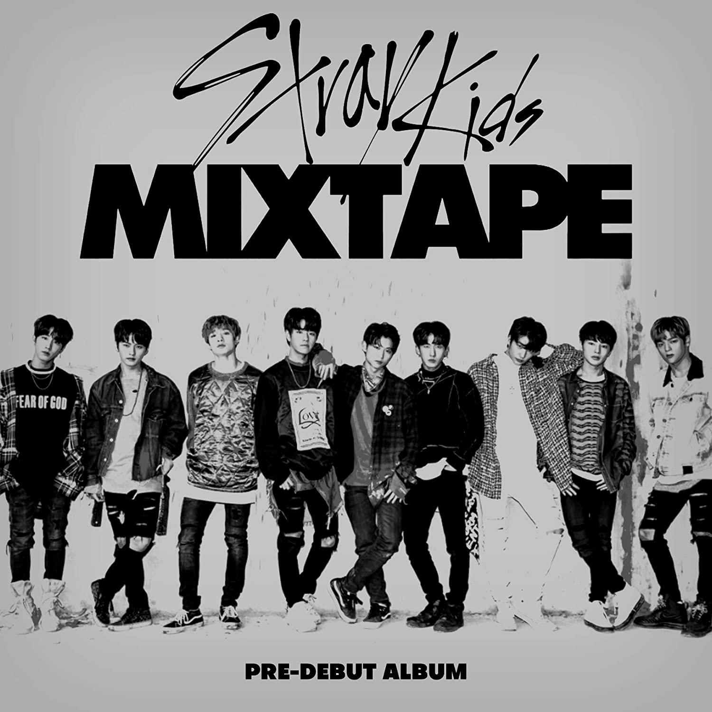
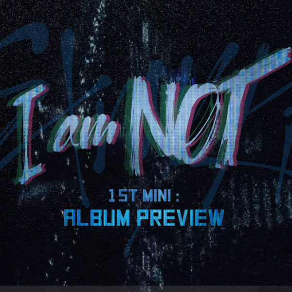
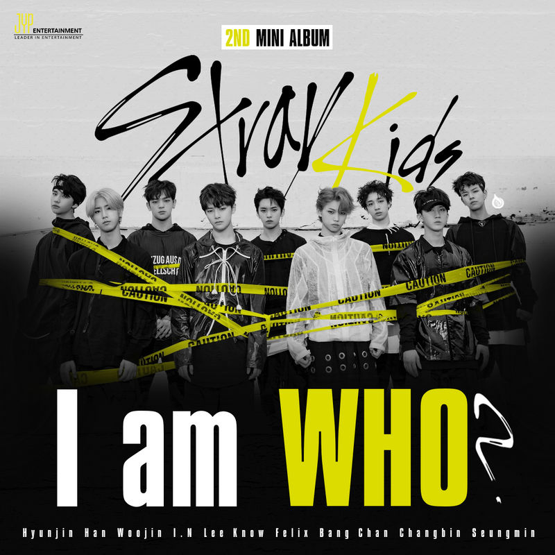
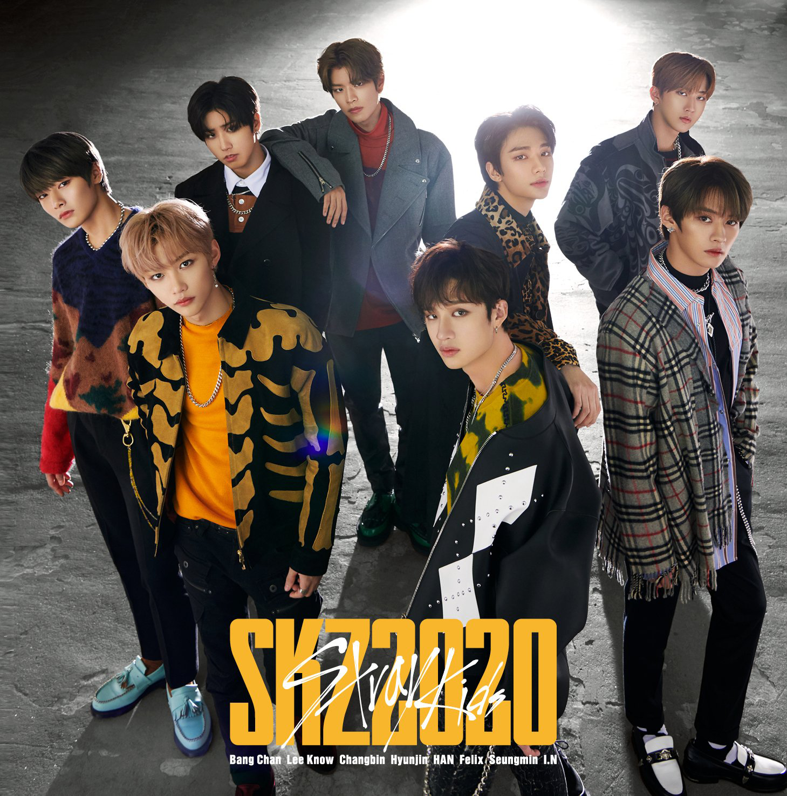
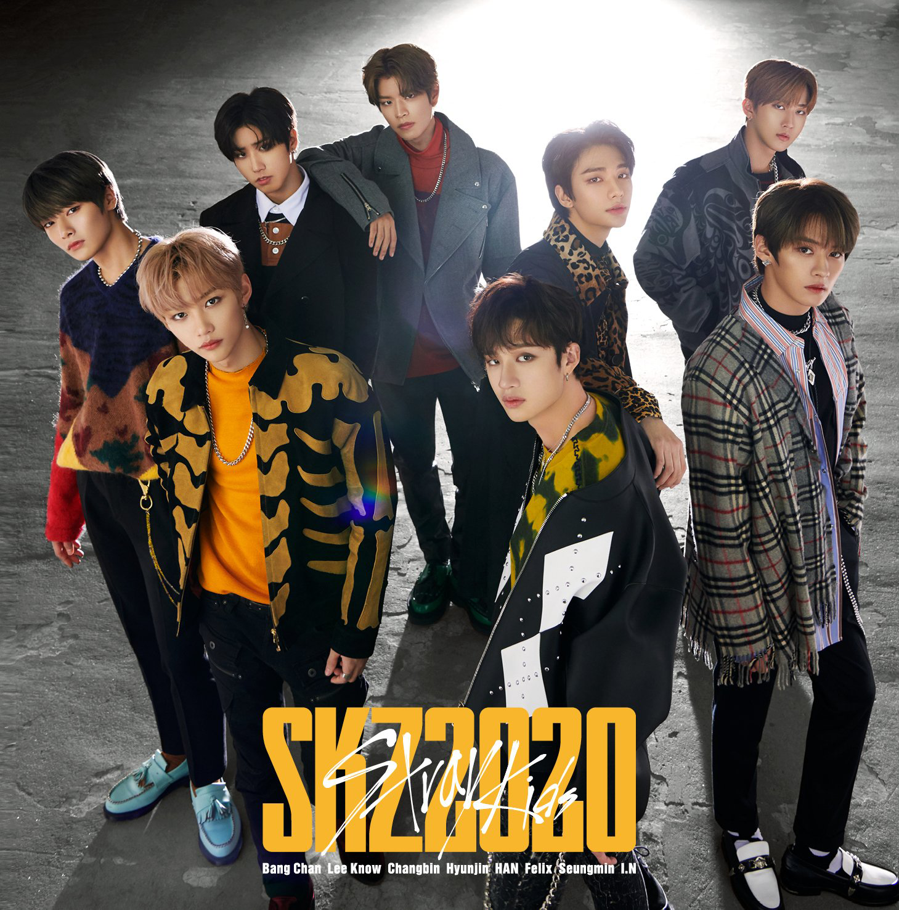
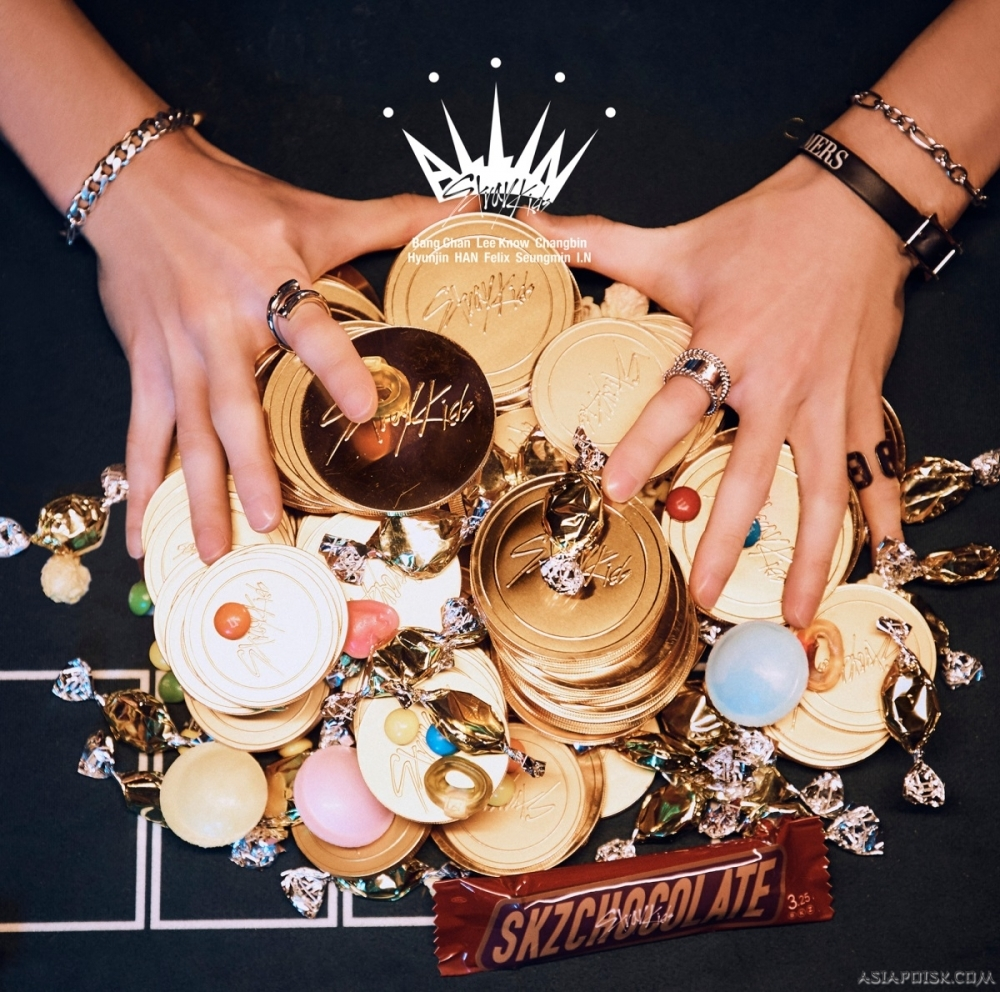
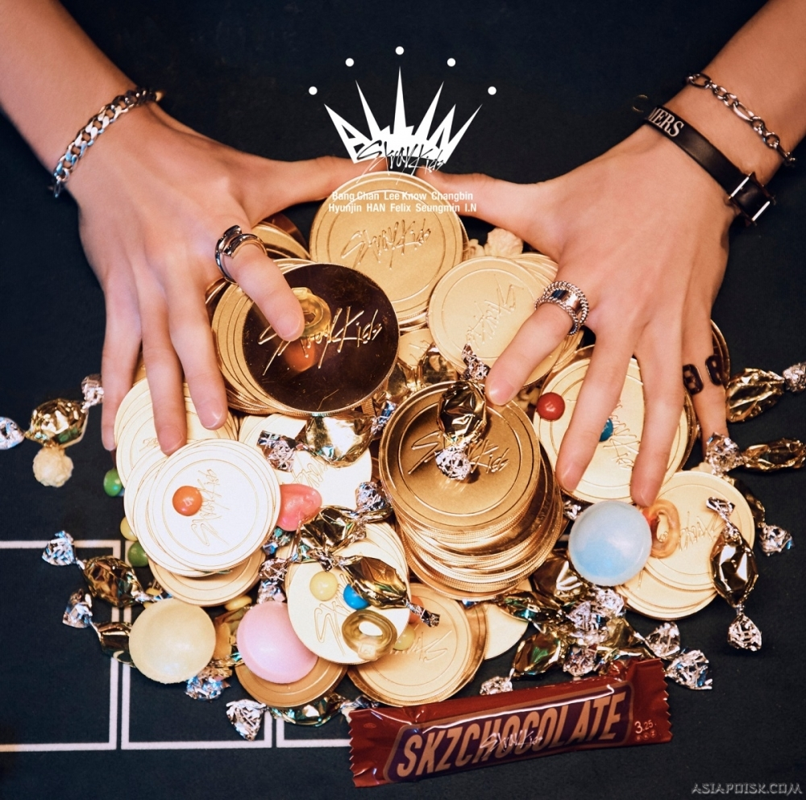
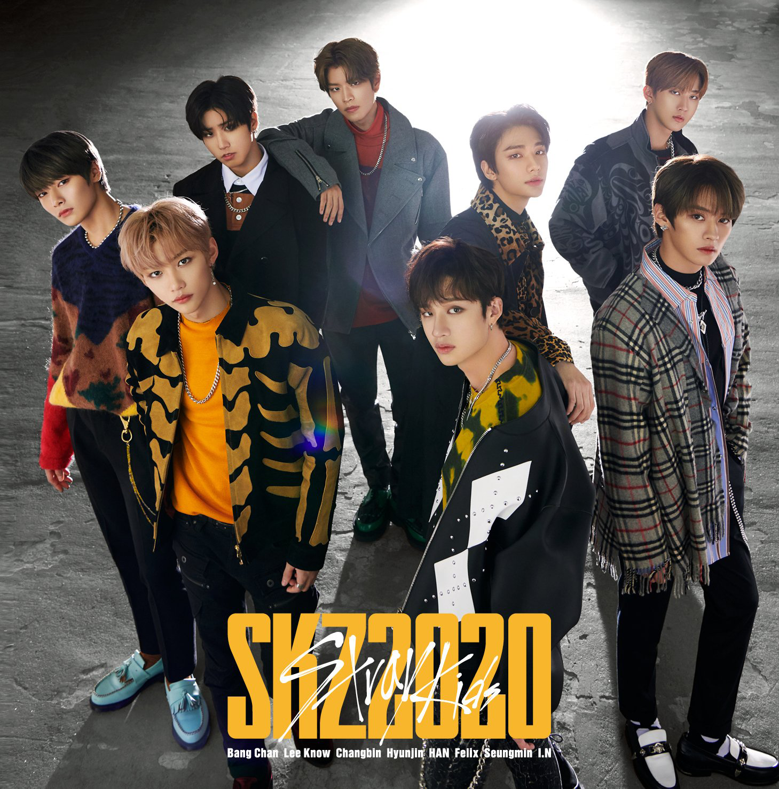
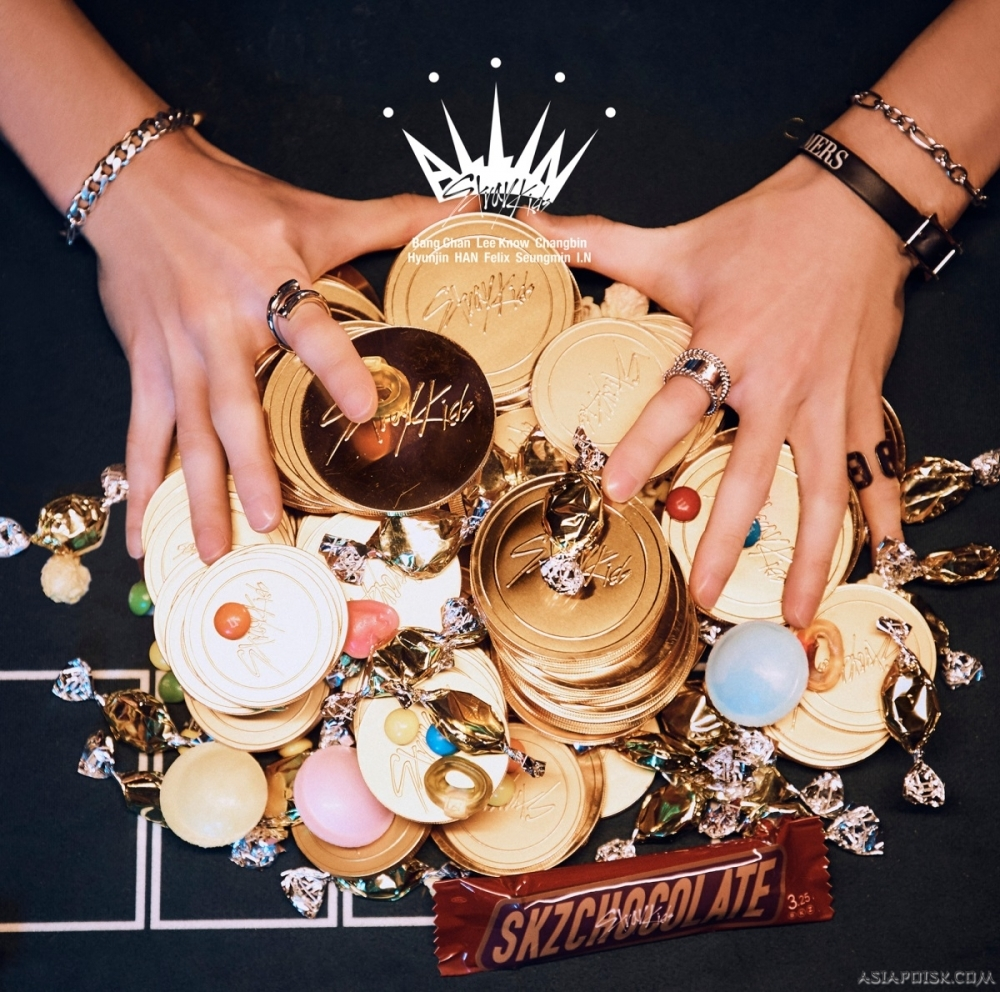

Фото групи

Про STRAY KIDS
Stray Kids (кор. 스트레이 키즈; стилізується як SKZ) — південнокорейський бой-бенд, сформований у 2018 році компанією JYP Entertainment через однойменне реаліті-шоу. Колектив складається з восьми учасників: Бан Чан, Лі Ноу, Чанбін, Хьонджин, Хан, Фелікс, Синмін та Ай'Ен. 8 січня 2018 року вони випустили пре дебютний мініальбом Mixtape. Офіційний дебют відбувся 25 березня 2018 року з мініальбомом I Am Not. ДокладнішеАльбоми групи у порядку випуска: Mixtape, I Am Not, I Am Who, I Am You, Clé 1: Miroh, Clé 2: Yellow Wood, Clé: Levanter, SKZ2020, GO LIVE, IN LIFE, All In, Noeasy





 


 



